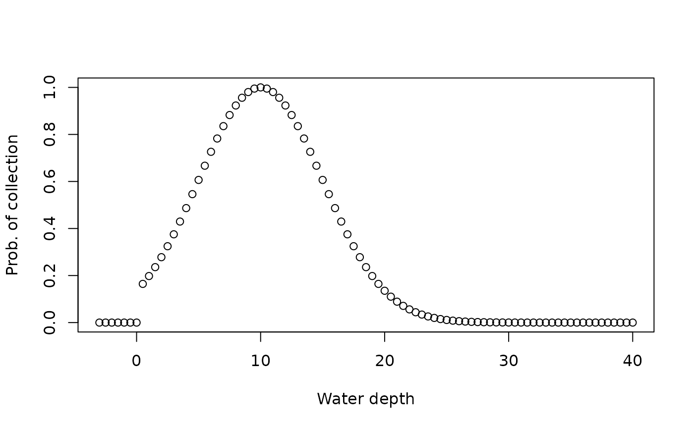

Defines niche model based in the "Probability of collection" model by Holland and Patzkowsky (1999).
The collection probability follows the shape of a bell curve across a gradient, where opt determines the peak (mean) of the bell curve, and tol the standard deviation. "snd" stands for "scaled normal distribution", as the collection probability has the shape of the probability density of the normal distribution.
Arguments
- opt
optimum value, gradient value where collection probability is highest
- tol
tolerance to changes in gradient. For large values, collection probability drops off slower away from
opt- prob_modifier
collection probability modifier, collection probability at
opt.- cutoff_val
NULL or a number. If a number, all collection probabilities at gradient values below
cutoff_valueare set to 0. This can for example be used to model exclusively marine species when the gradient is water depth (see examples).
References
Holland, Steven M. and Patzkowsky, Mark E. 1999. "Models for simulating the fossil record." Geology. https://doi.org/10.1130/0091-7613(1999)027%3C0491:MFSTFR%3E2.3.CO;2
See also
apply_niche() for usage of the returned function, bounded_niche() for another niche model
Examples
# using water depth as niche
wd = seq(-3, 40, by = 0.5)
f = snd_niche(opt = 10, tol = 5)
plot(wd, f(wd), xlab = "Water depth", ylab = "Prob. of collection")
# set cutoff value at to 0 to model non-terrestrial species.
f = snd_niche(opt = 10, tol = 5, cutoff_val = 0)
plot(wd, f(wd), xlab = "Water depth", ylab = "Prob. of collection")

# see also
#vignette("event_data")
#for examples how to use it for niche modeling